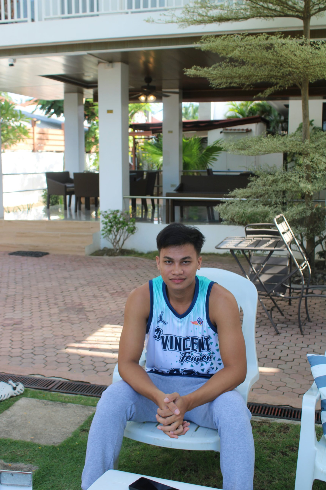

About me
Hi! I'm Jomar Bendillo, someone who enjoys playing basketball, swimming, and hiking. I love exploring new experiences and staying active. I'm also eager to learn programming, improve my skills, and discover more about technology. My goal is to keep learning and growing.
- Age
- 24
- Hometown
- Bonawon, Siaton
- Province
- Negros Oriental
What I do for fun
-
Basketball
Playing is how I stay active and sharp, and I'm happiest on the court.
-
Swimming
Cooling off in the water is always part of the plan.
-
Hiking
I look for new trails and new places to explore.